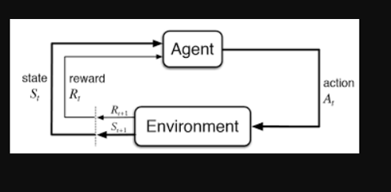

Reinforcement Learning (RL)
Reinforcement Learning (RL) is a branch of machine learning that focuses on how agents can learn to make decisions through trial and error to maximize cumulative rewards. RL allows machines to learn by interacting with an environment and receiving feedback based on their actions. This feedback comes in the form of rewards or penalties. Reinforcement Learning revolves around the idea that an agent (the learner or decision-maker) interacts with an environment to achieve a goal. The agent performs actions and receives feedback to optimize its decision-making over time.

Key Components of Reinforcement Learning
-
Agent: The decision-maker that performs actions.
-
Environment: The world or system in which the agent operates.
-
State: The situation or condition the agent is currently in.
-
Action: The possible moves or decisions the agent can make.
-
Reward: The feedback or result from the environment based on the agent’s action.
How Reinforcement Learning Works?
The RL process involves an agent performing actions in an environment, receiving rewards or penalties based on those actions, and adjusting its behavior accordingly. This loop helps the agent improve its decision-making over time to maximize the cumulative reward. Here’s a breakdown of RL components:
-
Policy: A strategy that the agent uses to determine the next action based on the current state.
-
Reward Function: A function that provides feedback on the actions taken, guiding the agent towards its goal.
-
Value Function: Estimates the future cumulative rewards the agent will receive from a given state.
-
Model of the Environment: A representation of the environment that predicts future states and rewards, aiding in planning.
Reinforcement Learning Example: Navigating a Maze
Imagine a robot navigating a maze to reach a diamond while avoiding fire hazards. The goal is to find the optimal path with the least number of hazards while maximizing the reward:
- Each time the robot moves correctly, it receives a reward.
- If the robot takes the wrong path, it loses points.
- The robot learns by exploring different paths in the maze. By trying various moves, it evaluates the rewards and penalties for each path. Over time, the robot determines the best route by selecting the actions that lead to the highest cumulative reward.
The robot’s learning process can be summarized as follows:
-
Exploration: The robot starts by exploring all possible paths in the maze, taking different actions at each step (e.g., move left, right, up, or down).
-
Feedback: After each move, the robot receives feedback from the environment:
- A positive reward for moving closer to the diamond.
- A penalty for moving into a fire hazard.
-
Adjusting Behavior: Based on this feedback, the robot adjusts its behavior to maximize the cumulative reward, favoring paths that avoid hazards and bring it closer to the diamond.
-
Optimal Path: Eventually, the robot discovers the optimal path with the least number of hazards and the highest reward by selecting the right actions based on past experiences.
Types of Reinforcements in RL
1. Positive Reinforcement
Positive Reinforcement is defined as when an event, occurs due to a particular behavior, increases the strength and the frequency of the behavior. In other words, it has a positive effect on behavior.
-
Advantages: Maximizes performance, helps sustain change over time.
-
Disadvantages: Overuse can lead to excess states that may reduce effectiveness.
2. Negative Reinforcement
Negative Reinforcement is defined as strengthening of behavior because a negative condition is stopped or avoided.
-
Advantages: Increases behavior frequency, ensures a minimum performance standard.
-
Disadvantages: It may only encourage just enough action to avoid penalties.
CartPole in OpenAI Gym
One of the classic RL problems is the CartPole environment in OpenAI Gym, where the goal is to balance a pole on a cart. The agent can either push the cart left or right to prevent the pole from falling over.
-
State space: Describes the four key variables (position, velocity, angle, angular velocity) of the cart-pole system.
-
Action space: Discrete actions—either move the cart left or right.
-
Reward: The agent earns 1 point for each step the pole remains balanced.
import gym
import numpy as np
import warnings
# Suppress specific deprecation warnings
warnings.filterwarnings("ignore", category=DeprecationWarning)
# Load the environment with render mode specified
env = gym.make('CartPole-v1', render_mode="human")
# Initialize the environment to get the initial state
state = env.reset()
# Print the state space and action space
print("State space:", env.observation_space)
print("Action space:", env.action_space)
# Run a few steps in the environment with random actions
for _ in range(10):
env.render() # Render the environment for visualization
action = env.action_space.sample() # Take a random action
# Take a step in the environment
step_result = env.step(action)
# Check the number of values returned and unpack accordingly
if len(step_result) == 4:
next_state, reward, done, info = step_result
terminated = False
else:
next_state, reward, done, truncated, info = step_result
terminated = done or truncated
print(f"Action: {action}, Reward: {reward}, Next State: {next_state}, Done: {done}, Info: {info}")
if terminated:
state = env.reset() # Reset the environment if the episode is finished
env.close() # Close the environment when done
Application of Reinforcement Learning
-
Robotics: RL is used to automate tasks in structured environments such as manufacturing, where robots learn to optimize movements and improve efficiency.
-
Game Playing: Advanced RL algorithms have been used to develop strategies for complex games like chess, Go, and video games, outperforming human players in many instances.
-
Industrial Control: RL helps in real-time adjustments and optimization of industrial operations, such as refining processes in the oil and gas industry.
-
Personalized Training Systems: RL enables the customization of instructional content based on an individual’s learning patterns, improving engagement and effectiveness.
Advantages of Reinforcement Learning
-
Solving Complex Problems: RL is capable of solving highly complex problems that cannot be addressed by conventional techniques.
-
Error Correction: The model continuously learns from its environment and can correct errors that occur during the training process.
-
Direct Interaction with the Environment: RL agents learn from real-time interactions with their environment, allowing adaptive learning.
-
Handling Non-Deterministic Environments: RL is effective in environments where outcomes are uncertain or change over time, making it highly useful for real-world applications.
Disadvantages of Reinforcement Learning
-
Not Suitable for Simple Problems: RL is often an overkill for straightforward tasks where simpler algorithms would be more efficient.
-
High Computational Requirements: Training RL models requires a significant amount of data and computational power, making it resource-intensive.
-
Dependency on Reward Function: The effectiveness of RL depends heavily on the design of the reward function. Poorly designed rewards can lead to suboptimal or undesired behaviors.
-
Difficulty in Debugging and Interpretation: Understanding why an RL agent makes certain decisions can be challenging, making debugging and troubleshooting complex.
Reinforcement Learning is a powerful technique for decision-making and optimization in dynamic environments. However, the complexity of RL necessitates careful design of reward functions and substantial computational resources. By understanding its principles and applications, RL can be leveraged to solve intricate real-world problems and drive advancements across various industries.